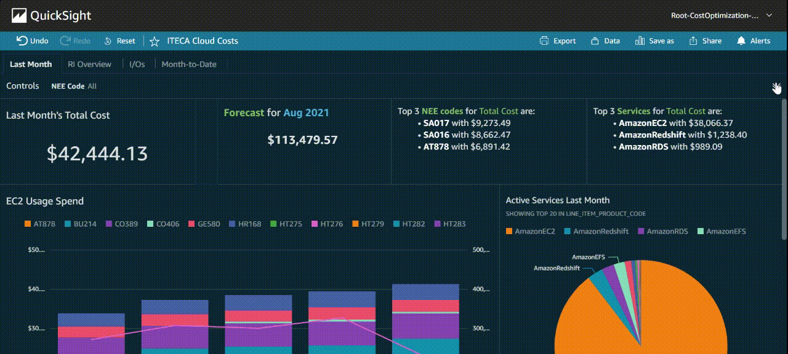

In the summer of 2021, I returned to NextEra Energy to develop data tools to track cloud financials. My data dashboards helped lead management make more informed decisions when it comes to using the AWS cloud platform. Below you can see an example of my Amazon QuickSight Dashboards.


Through this summer, I've utilized areas of analytics like SQL querying and data visualization. I also delved deeper into the world of cloud architecture as the department I worked in migrates more of their workload to AWS. This experience has been invaluable to me in both persuading me to learn more about cloud infrastructure and data engineering.
I'm looking forward to further opporunities like these to progress my passions in these fields.